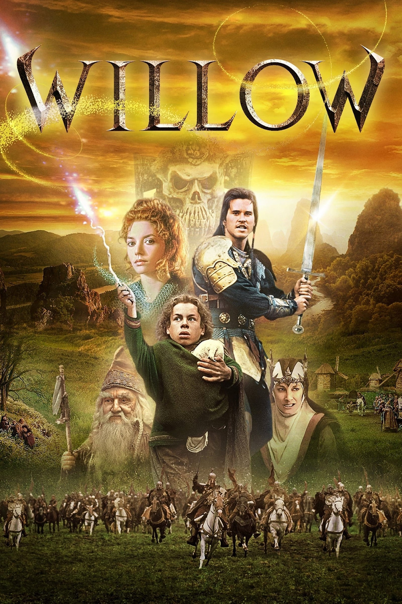

Мировая премьера: 20 мая 1988
Слоган: Забудьте всё, что вы знаете... или думаете, что знаете.
Сюжет: Когда юный Виллоу Афгуд обнаруживает брошенного младенца, он оказывается втянут в опасное приключение, полное магии и чудес. Согласно древнему пророчеству, именно этому ребёнку суждено положить конец правлению злой королевы – колдуньи Бавморы. Чтобы защитить дитя, Виллоу приходится объединиться с бывшим солдатом и вором Мэдмартиганом. Вместе им предстоит противостоять силам тьмы, готовым уничтожить любого, кто посмеет встать на пути королевы!
Режиссёр: Рон Ховард
В ролях: Уорвик Дэвис, Вэл Килмер, Джин Марш
| Уорвик Дэвис | Виллоу Афгуд |
| Вэл Килмер | Мэдмартиган |
| Джин Марш | Королева Бавмора |
| Джоэнн Уэлли | Сорша |
| Билли Барти | Великий Олдвин |
| Рик Овертон | Франджин |
| Кевин Поллак | Рул |
| Патриция Хейс | Фин Разел |
| Марк Нортховер | Баглкатт |
| Гэвэн О'Херлихи | Айрик Тобер |
| Дэвид Стейнберг | Мигош |
| Фил Фондакаро | Вонкар |
| Пэт Роуч | Генерал Кейл |
Бюджет: $ 35 млн.
Кассовые сборы в США: $ 57 млн.
Кассовые сборы в мире: $ 57 млн.
Продолжительность: 2 ч. 1 мин.
Рейтинг: 7.2